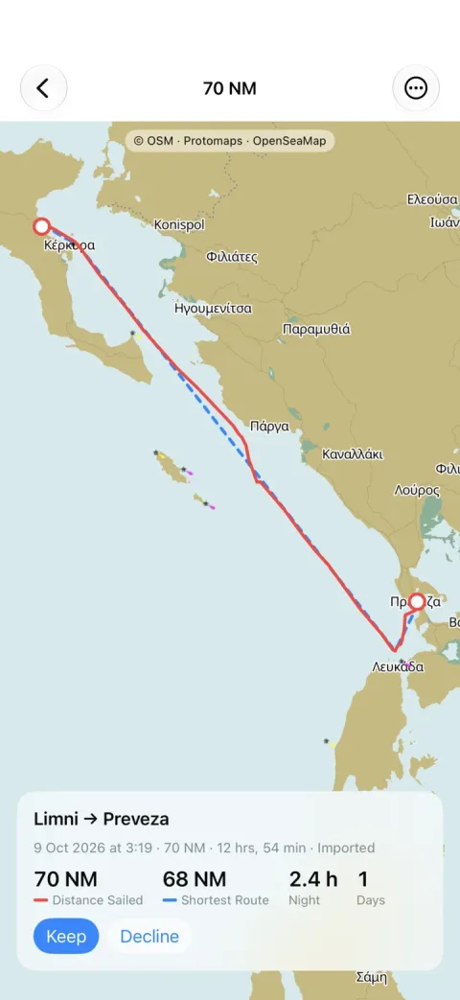
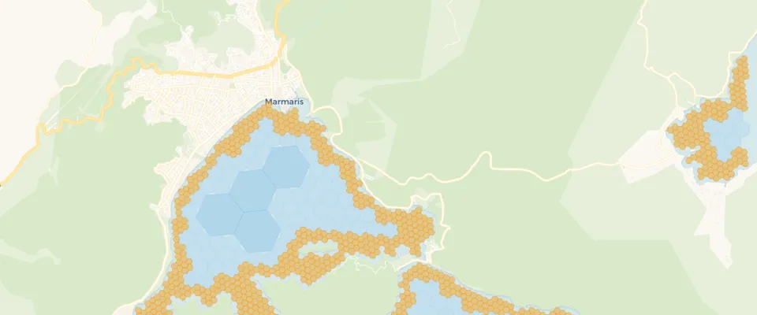
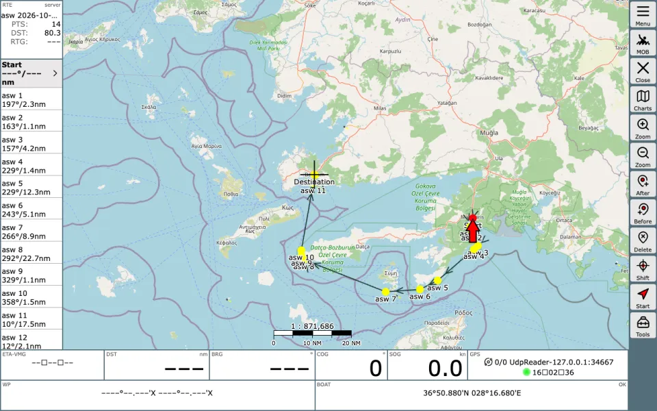

Rhumb Logbook

A sailing logbook app that records your sea time by itself. Next to the distance you sailed, it shows the shortest route over water from auto-sea-way, which runs on the phone.
auto-sea-way finds the shortest route over water between two coordinates. The route goes around land and through straits and canals, and it starts and ends at the exact points you give.
It is one program and one map file for the whole planet, and it runs on your own server or phone. We compared it with four other open source sea routers on 45 routes. Its routes were the closest to the official distance tables and crossed the least land. Two of the other routers are much faster, all of them are much smaller, and you can see where they win below.
Choose a route. The map shows the line of every router, and red marks show where a line goes over land. Use the boxes in the table to show or hide a router.
Line over land. Land next to a requested point that is itself on land, for example a port position a little inland. Every router has to cross it, so it is not counted as over land.
Routes are for planning only. None of these routers knows water depth, bridges or traffic rules.
| Router | Length, nm | vs Pub 151 | Over land, nm | Time, ms |
|---|
The test has the 23 routes of the auto-sea-way benchmark and 22 port pairs from NGA Pub 151, Distances Between Ports, a published table of sea distances from the US National Geospatial-Intelligence Agency. Every router got the same coordinates, and every line was measured by the same code.
| Router | Closest to Pub 151 | Within 2 % of Pub 151 | Mean difference from Pub 151 | Largest difference | Routes over land | Over land, nm | Routes over land, Natural Earth | Shortest line on water | Median time per route |
|---|---|---|---|---|---|---|---|---|---|
| auto-sea-way 0.11.1 | 17 | 22 of 22 | 0.51 % | 1.5 % | 4 | 1.6 | 0 | 38 | 34 ms |
| searoute-py 1.6.0 | 1 | 14 of 22 | 1.69 % | 4.4 % | 17 | 73.6 | 1 | 0 | 0.66 ms |
| scgraph 3.6.0 | 2 | 15 of 22 | 2.84 % | 24.9 % | 29 | 669.5 | 14 | 1 | 0.06 ms |
| searoute-ts 2.3.1 | 1 | 12 of 22 | 2.12 % | 5.9 % | 30 | 332.2 | 7 | 2 | 147 ms |
| eurostat/searoute (inactive since 2022) 3.6 | 3 | 12 of 22 | 2.43 % | 10.7 % | 24 | 264.4 | 5 | 1 | batch only |
Length is measured from the requested start to the requested end. Over land counts land more than 0.1 nm inside the OpenStreetMap coastline, and the Natural Earth column is an independent check with a coarser coastline. Time is the median time for one route on a Mac mini (Apple M2, 8 GB), with the map data already loaded. The benchmarks page has the method, every number per route and the raw data.
pip or npm command and run inside your program. auto-sea-way runs as a separate server, or inside an app through its Swift and Kotlin bindings.On 4 of the 45 routes another router found a shorter line that stays on water:
scgraph also routes on road and rail networks, and searoute-ts has port lists, arrival times and emissions estimates. auto-sea-way does only sea routes.
auto-sea-way builds its graph from the OpenStreetMap land polygons. It covers the water of the whole planet with H3 hexagons: large cells in the open ocean and small cells along the coast and in narrow passages such as Suez, Panama, Kiel or the Corinth Canal. The planet graph has 39 million cells.
A route starts and ends at the exact coordinates you ask for. The router searches the graph, then makes the line straight where the water allows it. Every leg is checked against the coastline along its great circle, so a long leg does not cut a cape.
The other four routers in this test use MARNET, a network of shipping lanes published by Eurostat. The versions in this test have between 9,700 and 72,000 points. It has no detailed coastline, so a route joins the network some miles away from the requested point, and a straight leg between two network points can cross an island.

The Docker image has the planet graph inside. Start it, wait until /ready answers, and ask for a route:
docker run -e ASW_API_KEY=changeme -p 3000:3000 ghcr.io/auto-sea-way/asw:0.11.1-full
curl -H 'X-Api-Key: changeme' \
'http://localhost:3000/route?from=36.85,28.27&to=36.39,25.46'The answer is JSON with the distance in nautical miles and the route as a GeoJSON line. land_legs lists the legs that go over land, here the last leg to the requested point in the town of Fira on Santorini:
{"distance_nm": 148.6, "raw_hops": 201, "smooth_hops": 12,
"geometry": {"type": "LineString", "coordinates": [[28.27, 36.85], [28.2648, 36.8091], ...]},
"shore_buffer_nm": 0.0, "land_legs": [13]}shore_buffer keeps the route away from the coast where it can, canals=false goes around the man-made canals, and arctic=true opens the Northern Sea Route and the Northwest Passage.
A sailing logbook app that records your sea time by itself. Next to the distance you sailed, it shows the shortest route over water from auto-sea-way, which runs on the phone.
An app that connects private boat owners with volunteer crew who share the journey and the costs. It uses auto-sea-way on its server to draw the sea route between the stops of a trip.

A plugin for AvNav, the navigation software that runs on a Raspberry Pi on board. It adds a To here
button that makes a route over water from the boat to the chart crosshair, offline.
Routes are for planning and must not be used for navigation. auto-sea-way knows only where the land is. It has no water depth, so a route can cross shallows, rocks or reefs. It does not know bridges, locks, traffic separation schemes or areas where you may not go, and small harbour details can be missing because the OpenStreetMap coastline is its only source.